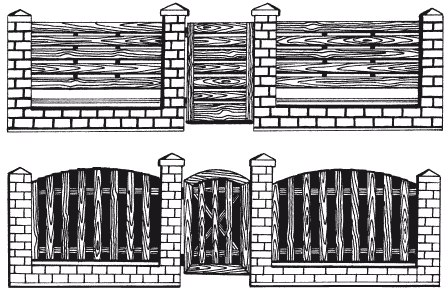

Ограждения и ограды.

Построив красивый загородный дом, необходимо возвести вокруг него не менее красивое, солидное и безопасное ограждение. Однако забор – это не только защита от непрошенных «гостей», но и своеобразный декоративных экран, отделяющий улицу от участка. Рисунок, форма, материалы ограды могут быть различными, но в любом случае они должны создаваться в соответствии с архитектурой дома, его стилем или деталями отделки. Этого можно добиться, если узор пролетов ограды будет подобен балюстрадам лестниц или балконов, столбики отделаны тем же материалом, что и стена или цоколь дома, а накрывающие их козырьки сделаны из того же материала, что и кровельное покрытие.
Материалы для огражденияВ наши дни весьма популярны металлические, каменные и кирпичные ограды. Такое ограждение лучше всего подходит для каменных домов традиционной архитектуры. Для строительства заборов современный рынок предлагает широкий ассортимент материалов. Можно использовать традиционное дерево, камень, кирпич, ставший популярным в последнее время монолитный бетон, керамику и металл. Все большим спросом стали пользоваться кованые или литые металлические заборы. Достаточно интересно смотрятся ограждения, выполненные из плоских или гофрированных листов жести или алюминия.
Металлические ограды
В наше время данный вид ограждения возрождается, переживая вторую молодость. Кузнечные мастера, не растерявшие секретов мастерства, в своей практике используют два вида ковки – горячую (с предварительным нагреванием заготовки) или холодную (без нагревания).
Холодная ковка – это способ, с помощью которого из заготовок, выгнутых на станках посредством сварки или клепки, собирают готовую продукцию. В настоящее время, используя старинные традиции, соединенные с современными технологиями, создают широкий ассортимент изделий: заборы, ворота, балконные и лестничные ограждения, фонари, подсвечники и др.
Горячей ковкой можно создать оригинальные орнаменты и узоры, которые нельзя воспроизвести ни на одном самом современном станке. С помощью горячей ковки профессионал превращает безжизненный металл в «живое» живописное полотно.
Часто металлические ограждения представляют собой настоящие произведения искусства, если кузнецы особым образом гравируют декор в виде листиков-цветочков или придают пруту особую фактуру под названиями «кора дерева», «лоза», «молотковая», «ржавчина» и т. д. Но дополнительный декор – это не только украшение, но и дополнительная прочность.
Следует отметить, что основным сырьем для металлических оград служит мощный металлический прут квадратного сечения 20 ? 20 мм, который принимает причудливые формы под действием огня и удара молота. Заполнение ограждения выполняется в соответствии с выбранным заказчиком рисунком из полосы 20 ? 10 (12) мм или кругляка соответствующего размера. Воедино элементы решетки собирают с помощью сварки. Места сварки закрывают коваными хомутами. Завершающим этапом отделки металлических элементов ограждения являются шлифовка, шпаклевка, а затем окраска.
Металлические ограды не только красивы, но и надежны. Оптимальная их высота – от 1,5 до 2,5 м, но можно сделать и выше. Секции забора опираются на каменные, кирпичные или металлические столбы, которые требуют основательного фундамента. Для защиты от любопытных взглядов изнутри к кованой ограде часто прикрепляют декоративный экран из поликарбоната, который пропускает свет, но надежно изолирует пространство участка.
После изготовления художественных кованых изделий их поверхность обрабатывают высококачественной антикоррозийной краской. С помощью современных красок изделию можно придать всевозможные оттенки. Например, можно имитировать золото или чугунное литье, искусственно старить металл. Выбор цветов для металлических ограждений самый разный: кузнечный черный, серый, изумрудная зелень, старый белый, медь, старая медь, шоколадный. Специальные составы со спецэффектом патины придают кованым изделиям солидный вид. Очень красиво смотрятся ограды с оттенками под медь, серебро или золото.
Ограда из проволочной сетки
Ограда из проволочной сетки может быть не менее красивой. Ее основой служит рама – каркас из стального уголка прямоугольной формы длиной 250–300 см, высотой 150–170 см. Для крепления проволоки просверливают сквозные отверстия с интервалом 15–20 см. Натяжение проволоки производится до исчезновения прогиба. Затем готовую конструкцию крепят к столбам. Подобное решение забора сегодня можно часто видеть на дачных или коттеджных участках. Ячейки сетки размером 5 ? 5 см создают размеренный ритм для всего ограждения.
Достоинства ограды из проволочной сетки в том, что она более проста в изготовлении, к тому же обходится хозяину значительно дешевле. Не менее важно, что заборы из сетки служат надежной опорой для вьющихся растений и в летний период превращаются в красивую зеленую изгородь.
Бетонные панели
Бетонные панели, опирающиеся на железобетонные столбы, весьма надежны и просты в установлении. Такие панели делают в заводских условиях. Они представляют собой наборные «доски», которые в горизонтальном положении вставляют в пазы столбов, сверху надевают фиксирующие панели-оголовки. Для их изготовления используют окрашенный бетон, армированный специальным стальным каркасом и усиленный фибрами из полипропиленового стекловолокна. Длина секции забора фиксируется, а высота зависит от количества уложенных «досок».
Подобные ограждения отличаются строгим дизайном, спокойной цветовой гаммой. Бетонные панели не требуют особого ухода, поскольку материал мало подвержен влиянию климатических воздействий, а окраска не нуждается в обновлении.
Кирпичная ограда
Кирпичная ограда надежна, массивна и смотрится очень солидно. Ее преимущества: не требует особого обслуживания, выглядит привлекательно и при этом обходится не слишком дорого. Если кладка выполнена профессионально, использовались доброкачественные раствор и кирпич, то такой забор простоит не менее 50 лет при нормальных условиях эксплуатации. К сожалению, уменьшают срок службы негативные современные условия и экология: близость дорог, автомобильные выхлопы, туман, сырость и др.
Чаще всего для кирпичных заборов используют клинкерные, облицовочные или силикатные кирпичи – колотые или обычные. Для возведения пролетов ограждений выбирают кирпичи, обладающие низкой впитывающей способностью и высокой морозостойкостью. Кирпичную ограду можно также оштукатурить либо обложить керамическими плитками.
При возведении кирпичных оград особое внимание обращают на цоколь и столбы, которые делают ограду более прочной и являются элементом декорирования. Кроме того, столбы устанавливают для того, чтобы навесить ворота. Цоколь и столбы должны быть немного шире фундаментов – примерно на 3 см с каждой стороны. Образуемый таким образом капинос защищает фундамент от стекающих атмосферных осадков, а если цоколь оштукатурить, то он оберегает также и от влаги, которая может выделяться растущей вокруг ограды травой и другими растениями. Для оштукатуренных пролетов и цоколей можно применять цельный кирпич 10-го или 15-го класса.
Для укладки кирпичных цоколей применяют цементный или цементно-известковый раствор марки М3 или М5. Вид раствора следует подбирать соответственно типу кирпичей: клинкерные и облицовочные кладут на цементный или специальный раствор для клинкера, для других типов кирпичей применяют цементно-известковый раствор. Кирпичи следует укладывать на незаполненные швы, а затем заполнять шпаклевкой.
На столбах и основании часто устанавливают венцы. Козырьки проще всего сделать из готовых бетонных или керамических элементов, но можно применять и другие материалы – уложенную с уклоном черепицу, выступающие за облицовку кладки кирпичи, профилированное покрытие из жести. Важно, чтобы венец заканчивался козырьком, защищающим стенку от дождевой и талой воды.
Деревянные ограды
С древних времен на Руси строили деревянные заборы и ставили калитки из бревен, досок или прутьев. Не менее популярны деревянные ограды в наше время. Дерево всегда прекрасно смотрится в любом ландшафте.
Многих пугает недолговечность дерева, однако грамотно спроектированная и аккуратно выполненная из качественного материала с применением современных средств защиты изгородь при должном уходе простоит не менее 30 лет.
Деревянные ограды обходятся значительно дешевле аналогов из прочих материалов, выглядят весьма привлекательно. Чтобы деревянный забор простоял подольше, следует использовать сухую древесину хвойных пород. Ее шлифуют, шпаклюют, добиваясь идеальной гладкости, и только затем красят. Все деревянные элементы еще до монтажа обрабатывают пропитками. Крепеж используют оцинкованный. Несущие конструкции и, прежде всего, нижнюю часть столбов смолят, а затем оборачивают рубероидом.
Для большей надежности можно выполнить пролеты забора из дерева, а цоколь и столбы возвести из камня (рис. 36).

Деревянный пролет – это элемент, заполняющий пространство между столбами и образующий собственно ограждение предполагаемой высоты и стиля. Такой пролет состоит из досок, прибитых к двум деревянным балкам. Верхняя линия балок может проходить вертикально или принимать форму дуги. В свою очередь нижние края должны иметь прямоугольную форму и находиться на высоте около 10 см над полотном. Крепят доски на ригели – горизонтальные несущие элементы. Ригели можно сделать из стальных профилей или деревянных балок. Деревянные элементы должны иметь сечение не менее 5 ? 10 см. Лучше всего, чтобы они были оструганы в форме параллелограмма. Благодаря этому с них будет легко стекать вода.
К ригелям прибивают либо привинчивают штакетники, которые чаще всего делаются из досок толщиной 25–38 мм и шириной 5–15 см. Их верхние концы могут быть профилированы различным образом. Это зависит в основном от стиля ограждения.
Средства для пропитки древесины
Гниение, плесень, насекомые-древоточцы значительно сократят срок службы деревянного забора, если не принять меры. Поэтому все деревянные ограждения, чтобы они служили дольше, желательно пропитать специальным раствором – разогретой олифой. Можно пропитать дерево особыми элементами под давлением. Для долговременной защиты древесины от губительного воздействия влаги и биоразрушений применяют специальные консервирующие защитные пропитки. К числу таких средств относятся широко известные экологически безопасные антисептики на водной основе. Обработанный этими составами деревянный забор на долгие годы обретет повышенную стойкость к воздействию разрушающих факторов.
Для долговременной защиты и отделки древесины под ценные породы используют современные тонизирующие антисептики с УФ-фильтром, который поглощает солнечное излучение и препятствует потемнению древесины под защитным слоем. Консервационные процедуры обычно следует повторять через несколько лет.
О фурнитуреДля навешивания пролетов деревянного ограждения, калиток и ворот нужна специальная фурнитура. Это могут быть простые элементы, выполненные самостоятельно из стального листа, но лучше применять специальные, уже готовые образцы, которые имеют антикоррозионное цинковое либо кадмиевое покрытие. Кроме того, готовая фурнитура обеспечивает возможность регулировки и простую установку деревянных элементов. При изготовлении пролетов удобно пользоваться особыми шаблонами – они помогают выдерживать одинаковое расстояние между штакетниками и обеспечивают ровный край внизу. В первом случае шаблон делают из двух сбитых в форме буквы Т досок, которые передвигают по верхнему ригелю. Во втором случае к крайним штакетникам прибивают выровненную горизонтально доску, которую позже убирают.
К числу простых, доступных и относительно дешевых способов строительства заборов относится использование ограды из реек. Их толщина может быть от 20 до 30 мм, ширина – 40–60 мм. Такой забор делается высотой до 2 м. Рейки крепят вертикально или под углом 30° или 45° к горизонтальным перекладинам. Забор из реек, окрашенный в белый или другой светлый цвет, контрастируя с зеленью и цветами, всегда имеет праздничный вид. Встречаются деревянные ограждения, выполненные не только из реек, но из деревянных панелей. На лицевую поверхность таких заборов монтируют резные накладные детали.
Загородный дом, построенный в деревенском стиле, можно оградить обычным штакетником – забором из реек, прибитых к горизонтальным перекладинам, традиционным плетнем – изгородью из переплетенных молодых деревьев и побегов кустарников. Можно устроить частокол, который состоит из кольев, вбитых в землю вплотную друг к другу.